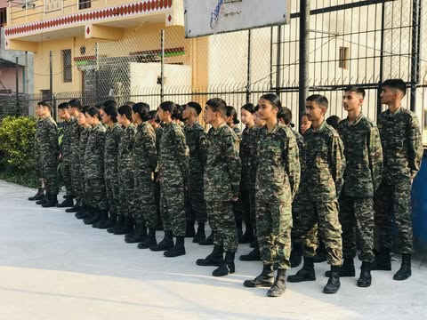
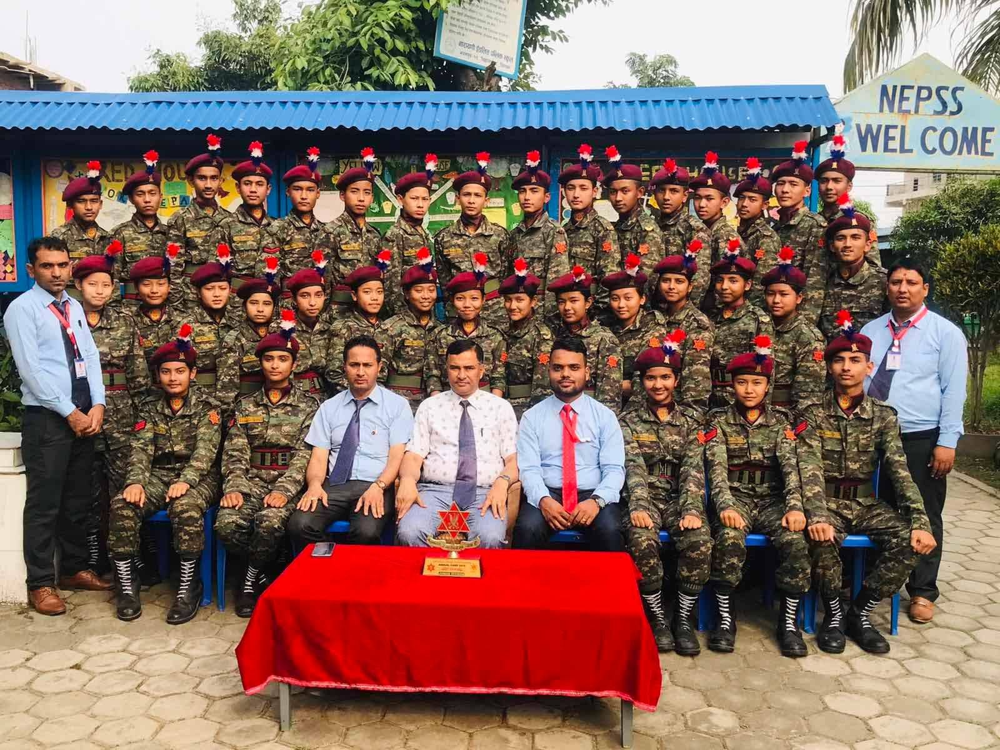
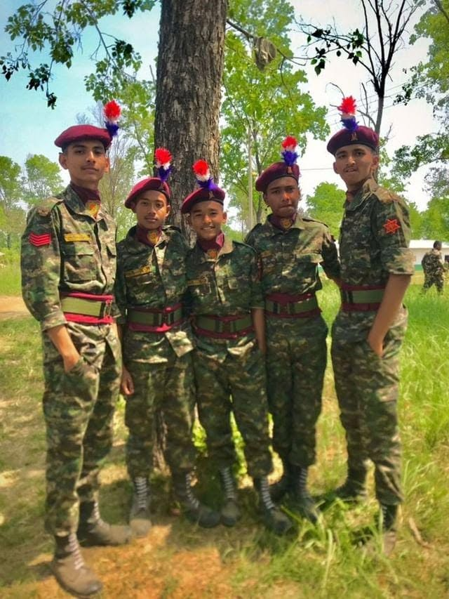

47th JD Batch
My NCC journey as a member of the 47th Junior Division Batch, beginning with school-level training.
A personal archive of my journey with the 47th Junior Division Batch, from training and discipline to the memories of our commissioning ceremony at Kohalpur, Banke.
47th Junior Division Batch. Fifteen continuous days that became a lasting memory.
I was part of the 47th Junior Division Batch, an experience that brought discipline, teamwork and shared responsibility into everyday life. Our commissioning ceremony took place in Kohalpur, Banke, following 15 continuous days together — a period I remember for the people, training and moments that made the experience meaningful.
Hover over a photograph.
Click to enlarge.

01
03
04My NCC journey as a member of the 47th Junior Division Batch, beginning with school-level training.
I held the rank of Sergeant during my NCC experience, a responsibility built through training and discipline.
Our commissioning ceremony took place at Kohalpur, Banke, following the commissioning phase of our NCC journey.
At school level, we completed 100 days of NCC training — building discipline, teamwork, responsibility and leadership before the commissioning experience.
With gratitude for the guidance, discipline and instruction that shaped my NCC experience.
With sincere appreciation for the support, training and memories throughout the journey.
47th Junior Division Batch · Sergeant · Kohalpur, Banke